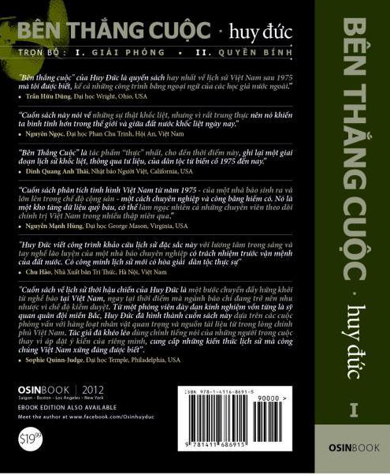

HẾT CUỐN I.
(Tìm đọc Bên Thắng Cuộc, CUỐN II: QUYỀN BÍNH).
Tác giả.
Huy Đức - Trương Huy San.
sinh năm 1962 tại Hà Tĩnh.
nhập ngũ tháng 3-1979.
học viên trường Sỹ quan Hoá Học (1980-1983).
chuyên gia quân sự ở Campuchia (1984-1987).
phóng viên báo Tuổi Trẻ, Thanh Niên, Thời báo Kinh Tế Sài Gòn, và Sài Gòn Tiếp Thị (1988-2009).
blogger của trang Osinblog (2006-2010).
Humphrey Fellow về phân tích chính sách tại Đại học Maryland (2005-2006).
Nieman Fellow về phân tích chính trị tại Đại học Harvard (2012-2013).
Liên hệ tác giả qua thư điện tử osinbook@gmail.com.
Facebook: https://www.facebook.com/BenThangCuocBook.

Mục lục
Mấy lời của tác giả
Lời cám ơn
Phần I: Miền Nam
Chương I: Ba Mươi Tháng Tư
Đi từ bưng biền
Xuân Lộc
Tướng Big Minh
Trại Davis
Nguyễn Hữu Hạnh
Sài Gòn trong vòng vây
Xe tăng 390
Đầu hàng
Tuẫn tiết
Chương II: Cải tạo
Những ngày đầu
“Ngụy Quyền”
“Ngụy Quân”
“Đoàn tụ”
“Phản động”
Tù và cải tạo
“Thăm Nuôi”
“Học Tập”
Chương III: Đánh tư sản
“Chiến dịch X-2”
Đổi tiền
“Gian thương”
“Cải tạo công thương nghiệp tư doanh”
Hai gia đình tư sản
Kinh tế mới
Chương IV: Nạn Kiều
Đội quân thứ năm
Hiệp định Geneva
“Chổi ngắn không quét xa”
Hoàng Sa
Sợ “con ngựa thành Troy”
“Nạn Kiều”
“Phương án II”
“Ban 69”
Vụ Cát Lái
Chương V: Chiến tranh
Biên giới Tây Nam
Pol Pot
Đi dây
Khmer Đỏ và Campuchia dân chủ
“Kẻ Thù Lịch Sử”
Thất bại trong tấn công ngăn chặn (Pre-emptive War)
“Nhất Biên Đảo”
“Áo lính lại khoác vào ngay”
Chương VI: Vượt biên
“Vượt biên”
Từ “trí thức yêu nước”
Đến “thường dân”
Trước khi tới biển
Đường tới các trại tị nạn
Chương VII: “Giải Phóng”
Sài Gòn thay đổi
Kinh tế mới
Đốt sách
Cạo râu
“Cách mạng là đảo lộn”
Lòng người
Những người được sinh ra không đúng cửa
“Cánh cửa” Thanh niên Xung phong
“Nổi loạn”
“Sài Gòn lại bắt đầu ghẻ lở”
Phần II: Thời Lê Duẩn
Chương VIII: Thống nhất
Nước Việt Nam là một
“Bắc hóa”
Chủ nghĩa xã hội
“Con đường của Bác”
“Mỗi người làm việc bằng hai”
Lê Duẩn và mối tình miền Nam
Chấp chính và chuyên chính
Chương IX: Xé Rào
Bế tắc
Mậu dịch quốc doanh
Máy bỏ không, công nhân cuốc ruộng
Tháo gỡ
Nghị quyết Trung ương 6
Bù giá vào lương
Cắm cờ xé rào
Khoán chui
Ông Kiệt xé rào, ông Linh lãnh đạn
“Ai thắng ai”
Chương X: Đổi mới
Hội nghị Đà Lạt
Nhóm giúp việc mới
Người của những khúc quanh lịch sử
Từ chính sách Kinh Tế Mới
Đến chọc thủng thành trì bao cấp
Giá-Lương-Tiền
Nã pháo vào bộ tổng
Khép lại trang sử Lê Duẩn
Vai trò của Mikhail Gorbachev
Tuyên ngôn đổi mới
Bàn tay Lê Đức Thọ
Phút 89
Chương XI: Campuchia
“Pot ở đầu phum ta cuối phum”
“Xuất khẩu cách mạng”
Tư tưởng nước lớn
Bị cô lập
Phương Bắc
Hội nghị Thành Đô
Campuchia thời hậu Việt Nam
Phụ lục 1. Sự thật lịch sử về tăng 390 và tăng 384
Phụ lục 2. Tướng Big Minh sau 1975
Tác giả
Danh mục sách tham khảo